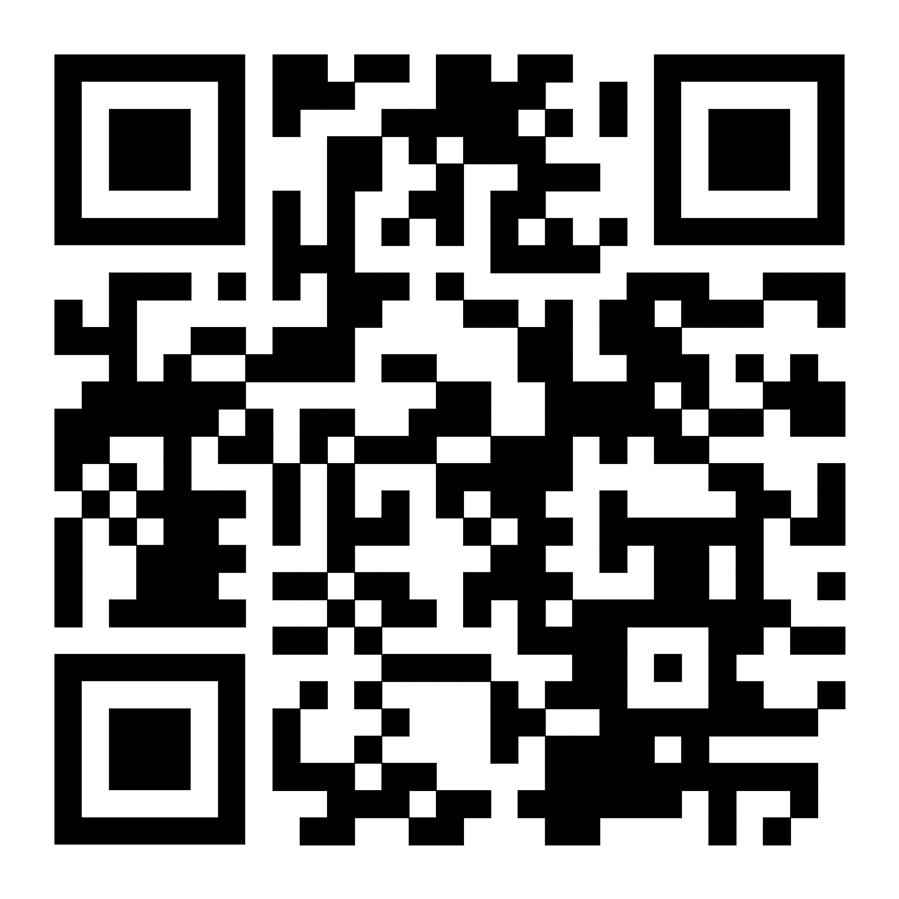

השיר האהוב על סבתא יהודית 🎶
Like
אם אהבתם את האתר של יהודית סיטבון – תנו לייק! 👍
QR Code
סרקו את הקוד כדי לבקר באתר של סבתא יהודית 📱
Q&A
1. שלושה הבדלים עיקריים בין Web1, Web2 ו־Web3:
א. ארכיטקטורה וטכנולוגיה בסיסית:
- Web1: ארכיטקטורה ריכוזית המבוססת על שרתים מרכזיים. אתרים סטטיים עם HTML פשוט, תוכן קבוע שנוצר על ידי בעלי אתרים בלבד. התוכן הועבר בעיקר בכיוון אחד - מהאתר למשתמש. טכנולוגיות עיקריות: HTML בסיסי, CSS ראשוני, ותמונות פשוטות.
- Web2: ארכיטקטורה ריכוזית עם פלטפורמות גדולות שולטות במידע (פייסבוק, גוגל, אמזון). טכנולוגיות דינמיות המאפשרות תקשורת דו-כיוונית באמצעות JavaScript, AJAX, ו-APIs. נוצרו "סילו" של מידע בשליטת תאגידים גדולים כאשר המשתמשים מייצרים את התוכן אך אינם שולטים בו. טכנולוגיות עיקריות: AJAX, JavaScript מתקדם, HTML5, פלטפורמות ענן.
- Web3: ארכיטקטורה מבוזרת המבוססת על רשתות עמית-לעמית (P2P) וטכנולוגיית בלוקצ'יין. אין נקודת כשל מרכזית והמידע מאוחסן במספר רב של מחשבים ברשת. טכנולוגיות עיקריות: בלוקצ'יין, חוזים חכמים, מטבעות מבוזרים (tokens), פרוטוקולי קונצנזוס, אחסון מבוזר (IPFS), וזהויות מבוזרות (DIDs).
ב. היחס בין משתמשים, יוצרי תוכן ובעלות על הנתונים:
- Web1: משתמשים הם צרכני מידע פסיביים בלבד ("קוראים"). רק מפתחי אתרים ובעלי ידע טכני יכלו ליצור תוכן. הבעלות על הנתונים הייתה שייכת לבעלי האתרים. אינטראקציה מוגבלת ביותר - בעיקר דפים סטטיים ללא אפשרות תגובה.
- Web2: משתמשים הם גם יוצרי תוכן ("קוראים-כותבים"). פלטפורמות מרכזיות אוספות ומנתחות את המידע שנוצר. המשתמשים מייצרים את התוכן, אך הבעלות בפועל על הנתונים היא של הפלטפורמות הגדולות שמרוויחות מפרסום ומכירת נתוני המשתמשים. אינטראקציה חברתית מפותחת - שיתוף, לייקים, תגובות.
- Web3: משתמשים הם בעלי שליטה מלאה על הנתונים שלהם ("קוראים-כותבים-בעלים"). המשתמש שולט על זהותו הדיגיטלית באמצעות ארנקים דיגיטליים ומפתחות פרטיים. אין צורך בגוף מרכזי לניהול הנתונים או האימות. תגמול ישיר ליוצרי תוכן באמצעות מטבעות ו-NFTs. אינטראקציה מבוססת ערך - עסקאות כלכליות מאובטחות, בעלות על נכסים דיגיטליים.
ג. מודל הפעולה ואבטחת מידע:
- Web1: מודל היררכי של "שרת-לקוח". אבטחה בסיסית ומוגבלת, ללא הצפנה מובנית. רמת פרטיות גבוהה יחסית בשל מיעוט איסוף נתונים. אמון מבוסס על הגורם המפרסם את האתר (חברה, ארגון).
- Web2: מודל ריכוזי המבוסס על פלטפורמות. אבטחה תלויה באמון בחברות הגדולות. איסוף מאסיבי של נתוני משתמשים ("אתה המוצר"). פרטיות נמוכה, פרופילי משתמשים מפורטים נבנים על ידי פלטפורמות. סיכונים לדליפת מידע מאסיבית בשל מאגרי מידע מרכזיים.
- Web3: מודל מבוזר המבוסס על קונצנזוס. אבטחה קריפטוגרפית מובנית בטכנולוגיית הבלוקצ'יין. שקיפות מלאה של עסקאות אך עם שמירה על אנונימיות מסוימת. אמון מבוסס מתמטיקה ולא על גופים מרכזיים ("trustless"). חוזים חכמים מבטיחים ביצוע אוטומטי של תנאים מוסכמים ללא צורך במתווכים.
2. דוגמה לתרחיש שימוש – חיפוש "תופעות לוואי של תרופות":
- Web1: המשתמש נכנס לאתר רשמי עם מידע סטטי כמו טקסטים יבשים ממשרד הבריאות, ללא אפשרות לתגובות.
- Web2: המשתמש שואל בפורום רפואי, מקבל תשובות מאנשים אחרים, רואה דירוגים, תגובות וחוויות אישיות.
- Web3: המשתמש מקבל מידע רפואי מאומת מתוך מאגר מבוזר (בלוקצ'יין), שומר על פרטיותו, והמידע עובר אימות אוטומטי דרך חוזים חכמים.
Contact Me
השאירו הודעה עבור סבתא יהודית 💌